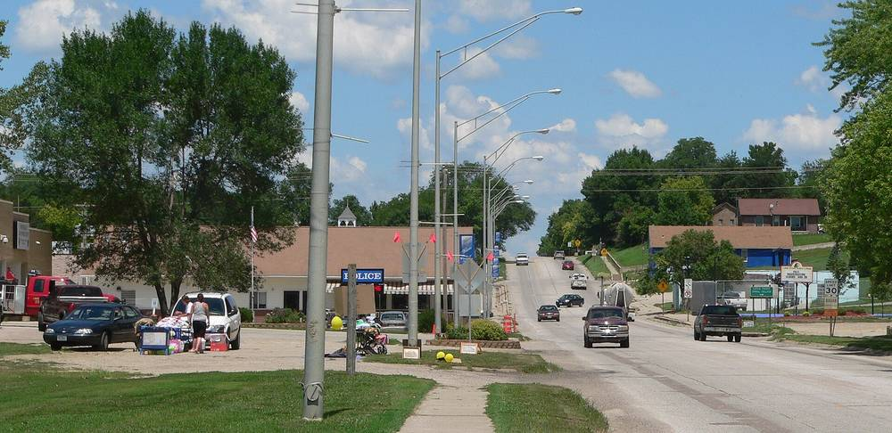

미국 네브래스카 위네바고 부족, 원주민 여성 4명이 직접 소방서 지붕에 태양광…설치 실습이 일자리 길로

32.13kW 패널 54장으로 연 4,900달러 절감, 원주민 주도 비영리단체 첫 여성 시공 교육 사업
미국 네브래스카주 위네바고 부족의 원주민 여성 4명이 부족 소방·응급의료 시설 지붕에 태양광 설비를 직접 설치하며 시공 기술을 익혔다. 패널 54장, 32.13kW 규모인 이 설비는 해마다 약 45MWh를 만들어 시설 전기요금을 연간 약 4,900달러, 25년 동안 약 16만7,800달러 줄일 것으로 예상된다. 사업은 2025년 출범한 덴버의 원주민 주도 비영리단체 Tribal Energy Alternatives가 부족과 함께 추진한 첫 여성 시공 교육 사업으로, 부족 태양광 지원 기금에서 받은 17만720달러에 구글의 추가 지원이 더해졌다. 교육생들은 산업안전 10시간 과정과 심폐소생술·응급처치 자격을 마쳤고, 단체는 이력서 정리와 취업 연결까지 돕기로 했다. 단체는 태양광 업계 인력 가운데 원주민 여성이 1%도 안 된다고 추산하며, 이번 교육생들이 앞으로 부족의 태양광 사업을 이끌 인력이 될 것으로 기대했다.
시민에너지 관점
발전소를 짓는 손이 그 지역 사람의 손일 때 재생에너지는 요금 절감을 넘어 일자리와 기술로 남는다. 32kW라는 작은 설비지만, 부족 시설의 25년 전기요금을 아끼고 여성 4명에게 새 직업의 길을 열었다는 점에서 효과는 크다. 국내에서도 햇빛소득마을과 공공건물 태양광이 늘고 있지만, 설치와 관리는 대부분 외지 업체가 맡고 마을에는 임대료나 배당만 남는다. 지자체는 마을 태양광 사업에 주민 시공·유지관리 교육을 함께 묶어, 발전소가 지역의 일자리와 기술 자산이 되도록 설계해야 한다.
출처: Tribal Business News 2026-11-07 Chez Oxendine 원문 보기
米ネブラスカ州ウィネベーゴ族、先住民女性4人が消防署の屋根に自ら太陽光を設置…実習が就職への道に
32.13kW・パネル54枚で年4,900ドル節約、先住民主導の非営利団体による初の女性施工研修事業
米ネブラスカ州ウィネベーゴ族の先住民女性4人が、部族の消防・救急医療施設の屋根に太陽光設備を自ら設置し、施工技術を身に付けた。パネル54枚、32.13kWのこの設備は年間約45MWhを発電し、施設の電気代を年約4,900ドル、25年間で約16万7,800ドル減らすと見込まれている。事業は2025年に発足したデンバーの先住民主導の非営利団体Tribal Energy Alternativesが部族とともに進めた初の女性施工研修事業で、部族向け太陽光支援基金から受けた17万720ドルにグーグルの追加支援が加わった。研修生は労働安全10時間の課程と心肺蘇生・応急処置の資格を修了し、団体は履歴書の整理や就職の橋渡しまで支援する。団体は太陽光業界の人材のうち先住民女性は1%にも満たないと推計しており、今回の研修生が今後の部族の太陽光事業を担う人材になると期待している。
市民エネルギーの視点
発電所をつくる手がその地域の人の手であるとき、再生可能エネルギーは電気代の節約を超えて仕事と技術として残る。32kWという小さな設備だが、部族施設の25年分の電気代を節約し、女性4人に新しい職業への道を開いたという点で効果は大きい。韓国でも「日差し所得村」や公共建物の太陽光は増えているが、設置と管理の多くは外部の業者が担い、村には賃料や配当だけが残る。自治体は村の太陽光事業に住民の施工・維持管理研修を組み合わせ、発電所が地域の雇用と技術の資産になるよう設計すべきだ。
出典: Tribal Business News 2026-11-07 Chez Oxendine 原文を読む
美国内布拉斯加州温尼贝戈部落4名原住民女性亲手在消防站屋顶装太阳能，安装实训变成就业之路
32.13千瓦、54块面板每年节省4,900美元，原住民主导非营利组织首个女性施工培训项目
美国内布拉斯加州温尼贝戈部落的4名原住民女性，亲手在部落消防和急救医疗设施的屋顶安装太阳能设备，掌握了施工技术。这套由54块面板组成、规模32.13千瓦的设备每年发电约45兆瓦时，预计每年为该设施节省约4,900美元电费，25年合计约16万7,800美元。项目由2025年成立、总部位于丹佛的原住民主导非营利组织Tribal Energy Alternatives与部落共同推进，是该组织首个女性施工培训项目，资金来自部落太阳能支持基金的17万720美元，并获得谷歌追加支持。学员完成了10小时职业安全课程，并取得心肺复苏和急救证书，该组织还将协助她们整理简历、对接就业。该组织估计，原住民女性在太阳能行业从业人员中占比不到1%，并期待这批学员成为今后推动部落太阳能事业的人才。
市民能源视角
当建电站的是当地人自己的双手，可再生能源留下的就不只是电费节省，还有工作和技术。32千瓦的设备虽小，却为部落设施节省了25年的电费，并为4名女性开启了新职业之路，效果不小。韩国的阳光收入村和公共建筑太阳能也在增加，但安装和管理大多由外地企业承担，村里只留下租金或分红。地方政府应把居民施工和运维培训与村庄太阳能项目捆绑推进，让电站成为当地的就业和技术资产。
来源: Tribal Business News 2026-11-07 Chez Oxendine 查看原文
Four Native Women Install Solar on Winnebago Tribe's Fire Station in Nebraska, Turning Training into a Path to Jobs
54-panel, 32.13 kW array to save about $4,900 a year in the first women's installation training project of a Native-led nonprofit
Four Native women from the Winnebago Tribe of Nebraska learned solar installation skills by putting an array on the roof of the tribe's fire and emergency medical services facility themselves. The 54-panel, 32.13-kilowatt system is expected to generate about 45 megawatt-hours a year, cutting the facility's electricity costs by an estimated $4,900 a year and about $167,800 over 25 years. The work was the first women's installation training project of Tribal Energy Alternatives, a Denver-based Native-led nonprofit launched in 2025, and was funded by a $170,720 grant from the Tribal Solar Accelerator Fund with additional support from Google. The trainees completed a 10-hour occupational safety course and earned CPR and first aid certifications, and the organisation will help them update their resumes and find solar jobs. It estimates that Native women make up less than 1% of the solar workforce and hopes the trainees will become a resource for the tribe's future solar projects.
Citizen Energy View
When the hands that build a power plant belong to local people, renewable energy leaves behind jobs and skills as well as lower bills. A 32-kilowatt array is small, yet it saves a tribal facility 25 years of electricity costs and opens a new career path for four women. In Korea, sunlight income villages and solar on public buildings are spreading, but outside contractors usually install and maintain them, leaving villages with only rent or dividends. Local governments should tie installation and maintenance training for residents into village solar projects so that each plant becomes a local asset of jobs and skills.
Source: Tribal Business News 2026-11-07 Chez Oxendine Read the original